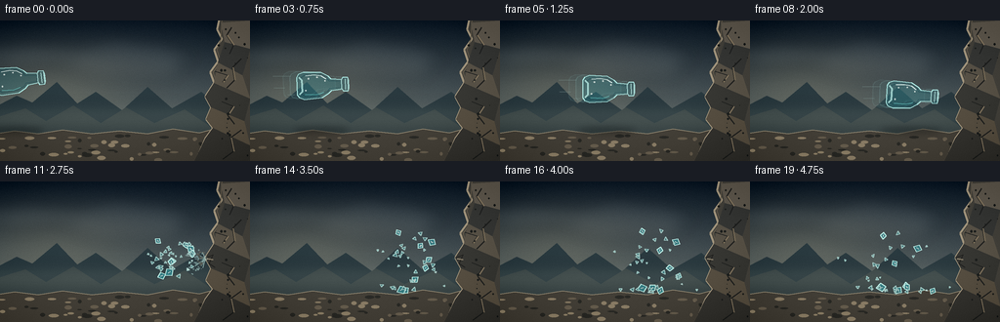
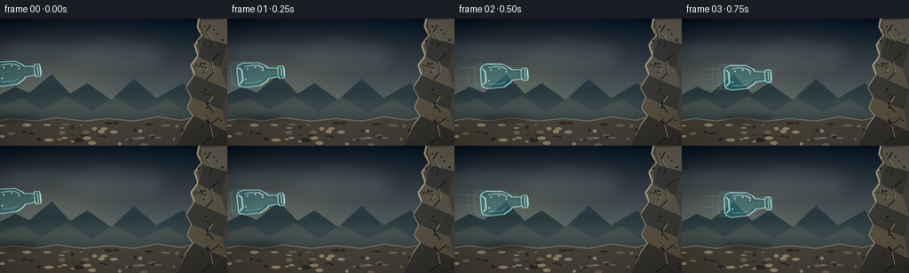

CODING AGENTS AS PIXEL WORLD MODELS
traex/GPT-5.6-Sol · phygen_133
点击播放 · 原生 RGB 像素
此结果可播放，但该运行尚未通过最终提交审核。页面展示不代表评测通过。
逐轮保存的候选
回放视频、检查图与代码变化。
每份候选均可单独播放。实际图片检查记录在下方工具轨迹中。
候选 01播放与检查图
点击播放 · 原生 RGB 像素


展开代码变化
--- 上一保存版本
+++ 本次保存版本
@@ -0,0 +1,349 @@
+from pathlib import Path
+import math
+import json
+import numpy as np
+from PIL import Image, ImageDraw, ImageFilter
+import artifact_io
+
+CASE_DIR = Path(__file__).resolve().parent
+SPEC = json.loads((CASE_DIR / "task_spec.json").read_text())
+W, H = SPEC["width"], SPEC["height"]
+N, FPS = SPEC["frames"], SPEC["fps"]
+SS = 3
+SW, SH = W * SS, H * SS
+rng = np.random.default_rng(133)
+
+
+def pts(seq):
+ return [(int(round(x * SS)), int(round(y * SS))) for x, y in seq]
+
+
+def xy(p):
+ return (int(round(p[0] * SS)), int(round(p[1] * SS)))
+
+
+def make_static_scene():
+ # A cool overcast sky with a warm low glow; all texture is fixed in time.
+ yy = np.linspace(0, 1, SH, dtype=np.float32)[:, None, None]
+ top = np.array([15, 27, 39], np.float32)[None, None, :]
+ bottom = np.array([120, 130, 126], np.float32)[None, None, :]
+ arr = top * (1 - yy) + bottom * yy
+ arr = np.repeat(arr, SW, axis=1)
+ X, Y = np.meshgrid(np.arange(SW), np.arange(SH))
+ glow = np.exp(-(((X / SS - 53) / 83) ** 2 + ((Y / SS - 72) / 45) ** 2))[:, :, None]
+ arr += glow * np.array([25, 20, 11], np.float32)
+ fixed_noise = rng.normal(0, 1.8, (SH, SW, 1)).astype(np.float32)
+ arr += fixed_noise
+ base = Image.fromarray(np.uint8(np.clip(arr, 0, 255)), "RGB").convert("RGBA")
+
+ # Broad soft cloud banks.
+ cloud = Image.new("RGBA", (SW, SH), (0, 0, 0, 0))
+ cd = ImageDraw.Draw(cloud)
+ cd.polygon(pts([(-20, 31), (25, 22), (78, 27), (117, 17), (174, 24), (204, 39), (178, 49), (80, 43), (10, 50)]), fill=(158, 170, 171, 35))
+ cd.polygon(pts([(61, 48), (111, 38), (154, 41), (191, 54), (173, 61), (101, 60)]), fill=(215, 214, 199, 24))
+ cloud = cloud.filter(ImageFilter.GaussianBlur(8 * SS))
+ base = Image.alpha_composite(base, cloud)
+ d = ImageDraw.Draw(base, "RGBA")
+
+ # Distant mountain silhouettes establish scale and depth.
+ d.polygon(pts([(-10, 109), (-10, 91), (17, 77), (33, 84), (58, 63), (79, 85), (98, 73), (125, 92), (151, 68), (176, 90), (206, 73), (241, 102), (270, 92), (270, 120)]), fill=(42, 58, 64, 210))
+ d.polygon(pts([(-10, 116), (-10, 101), (26, 90), (47, 103), (75, 87), (103, 105), (129, 89), (158, 105), (189, 91), (219, 111), (270, 96), (270, 125)]), fill=(58, 70, 71, 235))
+ # A little atmospheric haze along the horizon.
+ haze = Image.new("RGBA", (SW, SH), (0, 0, 0, 0))
+ hd = ImageDraw.Draw(haze)
+ hd.rectangle((0, 86 * SS, SW, 112 * SS), fill=(166, 169, 151, 28))
+ haze = haze.filter(ImageFilter.GaussianBlur(7 * SS))
+ base = Image.alpha_composite(base, haze)
+ d = ImageDraw.Draw(base, "RGBA")
+
+ # Rough stony ground.
+ ground_poly = [(-5, 116), (15, 113), (39, 116), (64, 112), (94, 116), (122, 113), (151, 116), (177, 111), (204, 115), (227, 109), (263, 112), (263, 149), (-5, 149)]
+ d.polygon(pts(ground_poly), fill=(69, 65, 57, 255))
+ d.line(pts(ground_poly[:11]), fill=(150, 139, 117, 130), width=SS)
+ # Ground strata and pebbles.
+ for i in range(55):
+ x = float(rng.uniform(0, W))
+ y = float(rng.uniform(118, 143))
+ rw = float(rng.uniform(1.2, 5.2))
+ rh = float(rng.uniform(.5, 2.0))
+ col = rng.choice([(43, 43, 39, 150), (103, 94, 79, 150), (139, 126, 103, 105)])
+ d.ellipse((int((x-rw)*SS), int((y-rh)*SS), int((x+rw)*SS), int((y+rh)*SS)), fill=tuple(col))
+
+ # Dominant solid rock face on the right: jagged boundary and faceted planes.
+ cliff = [(256, -5), (225, -5), (222, 9), (227, 19), (219, 30), (223, 42),
+ (215, 53), (219, 64), (210, 78), (216, 89), (211, 101), (218, 110),
+ (210, 121), (198, 149), (261, 149)]
+ d.polygon(pts(cliff), fill=(70, 68, 62, 255))
+ # Lit edge makes the collision plane unambiguous.
+ d.line(pts(cliff[1:-1]), fill=(164, 151, 127, 210), width=2*SS)
+ d.line(pts([(227, 0), (226, 19), (222, 30), (226, 42), (218, 53), (222, 65), (213, 78), (219, 89), (214, 101), (221, 111), (213, 122), (203, 144)]), fill=(99, 91, 77, 170), width=SS)
+ # Rock facets.
+ facets = [
+ ([(226, 2), (256, 0), (256, 29), (230, 22)], (97, 91, 81, 255)),
+ ([(230, 22), (256, 29), (248, 56), (223, 43)], (57, 58, 56, 255)),
+ ([(223, 43), (248, 56), (256, 80), (219, 64)], (90, 84, 73, 255)),
+ ([(219, 64), (256, 80), (250, 103), (216, 89), (210, 78)], (57, 57, 53, 255)),
+ ([(216, 89), (250, 103), (256, 128), (218, 110), (211, 101)], (88, 80, 67, 255)),
+ ([(218, 110), (256, 128), (256, 144), (199, 144), (210, 121)], (54, 53, 49, 255)),
+ ]
+ for poly, col in facets:
+ d.polygon(pts(poly), fill=col)
+ # Mineral seams, pits and cracks.
+ cracks = [
+ [(237, 7), (232, 15), (239, 25), (235, 34)],
+ [(247, 39), (238, 48), (240, 61), (232, 69)],
+ [(227, 83), (239, 88), (233, 97), (240, 106)],
+ [(247, 112), (236, 120), (239, 134), (228, 142)],
+ [(220, 52), (233, 56), (228, 63)],
+ ]
+ for c in cracks:
+ d.line(pts(c), fill=(33, 34, 33, 185), width=SS)
+ if len(c) > 2:
+ d.line(pts([(c[1][0]+.7, c[1][1]), (c[2][0]+.7, c[2][1])]), fill=(138, 124, 101, 80), width=SS)
+ for i in range(24):
+ x = float(rng.uniform(224, 255)); y = float(rng.uniform(4, 140))
+ r = float(rng.uniform(.4, 1.5))
+ d.ellipse((int((x-r)*SS), int((y-r)*SS), int((x+r)*SS), int((y+r)*SS)), fill=(31, 33, 32, int(rng.integers(50, 135))))
+ return base
+
+
+STATIC = make_static_scene()
+
+
+def transform(local_points, center, angle_deg):
+ a = math.radians(angle_deg)
+ ca, sa = math.cos(a), math.sin(a)
+ out = []
+ for x, y in local_points:
+ out.append((center[0] + x*ca - y*sa, center[1] + x*sa + y*ca))
+ return out
+
+
+BOTTLE_OUTER = [(-25,-9), (-23,-12), (-18,-14), (0,-13), (7,-9), (10,-6),
+ (21,-5), (22,-7), (27,-7), (28,-4), (28,4), (27,7), (22,7),
+ (21,5), (10,6), (7,9), (0,13), (-18,14), (-23,12), (-25,9)]
+BOTTLE_INNER = [(-21,-8), (-17,-11), (-1,-10), (6,-7), (8,-4), (20,-3),
+ (20,3), (8,4), (6,7), (-1,10), (-17,11), (-21,8)]
+
+
+def draw_bottle(image, center, angle, opacity=1.0, cracked=False, ghost=False):
+ layer = Image.new("RGBA", image.size, (0,0,0,0))
+ d = ImageDraw.Draw(layer, "RGBA")
+ outer = transform(BOTTLE_OUTER, center, angle)
+ inner = transform(BOTTLE_INNER, center, angle)
+ if ghost:
+ d.polygon(pts(outer), fill=(90, 210, 214, int(18*opacity)))
+ d.line(pts(outer + [outer[0]]), fill=(163, 237, 234, int(55*opacity)), width=SS)
+ return Image.alpha_composite(image, layer)
+ # Transparent colored glass: dark thickness, cool body tint, bright rim.
+ d.polygon(pts(outer), fill=(40, 141, 151, int(61*opacity)))
+ d.line(pts(outer + [outer[0]]), fill=(181, 243, 237, int(235*opacity)), width=SS)
+ d.line(pts(inner + [inner[0]]), fill=(21, 88, 99, int(125*opacity)), width=SS)
+ # Thick bottle base on the trailing left edge.
+ base_edge = transform([(-23,-9),(-20,-6),(-20,6),(-23,9)], center, angle)
+ d.line(pts(base_edge), fill=(188, 247, 241, int(185*opacity)), width=2*SS)
+ # Neck and lip rings.
+ for lx in (20.5, 24.5, 27.2):
+ ring = transform([(lx,-5.3),(lx,5.3)], center, angle)
+ d.line(pts(ring), fill=(192, 250, 244, int(180*opacity)), width=SS)
+ # Long curved-looking highlight and lower caustic.
+ shine = transform([(-16,-10),(-7,-10.7),(0,-9.5),(5,-6.2)], center, angle)
+ d.line(pts(shine), fill=(239,255,250,int(205*opacity)), width=SS)
+ low = transform([(-17,9),(-5,9.5),(2,7.7)], center, angle)
+ d.line(pts(low), fill=(105,225,220,int(150*opacity)), width=SS)
+ # Tiny trapped highlight flecks make the material read as glass.
+ for q in [(-13,-7),(-4,-8),(4,-4),(-16,5)]:
+ p = transform([q], center, angle)[0]
+ r = 0.7*SS
+ d.ellipse((p[0]*SS-r,p[1]*SS-r,p[0]*SS+r,p[1]*SS+r), fill=(241,255,250,int(180*opacity)))
+ if cracked:
+ crack_paths = [
+ [(18,-4),(13,-1),(8,-5),(3,-2),(-2,-5)],
+ [(13,-1),(9,3),(3,1),(-3,6),(-9,3)],
+ [(8,-5),(6,-9),(1,-12)],
+ [(9,3),(7,8),(1,11)],
+ [(3,1),(-3,-2),(-10,1),(-16,-4)],
+ ]
+ for cp in crack_paths:
+ c = transform(cp, center, angle)
+ d.line(pts(c), fill=(237,255,251,235), width=SS)
+ return Image.alpha_composite(image, layer)
+
+
+# Deterministic shard shapes and physically stepped trajectories after impact.
+shards = []
+for i in range(38):
+ large = i < 8
+ size = float(rng.uniform(3.8, 7.2) if large else rng.uniform(1.1, 3.8))
+ ox = float(210 - rng.uniform(1, 48))
+ oy = float(79 + rng.uniform(-11, 11))
+ # Reflection from a rigid wall: most fragments recoil left while spreading vertically.
+ vx = float(-rng.uniform(1.8, 7.8) * (1.0 if large else rng.uniform(.7, 1.35)))
+ if i in (5, 14, 25):
+ vx = float(rng.uniform(.6, 2.0)) # these immediately rebound off the wall below
+ vy = float(rng.uniform(-7.4, 5.0))
+ ang = float(rng.uniform(0, 360)); spin = float(rng.uniform(-34, 34))
+ shape = [(-.8*size,-.25*size),(.2*size,-.65*size),(.75*size,.2*size),(-.15*size,.68*size)] if large else [(-.65*size,-.35*size),(.7*size,-.2*size),(-.1*size,.75*size)]
+ shards.append(dict(x=ox,y=oy,vx=vx,vy=vy,a=ang,spin=spin,size=size,shape=shape))
+
+# State snapshots, one for each post-impact frame (frame 10 onward).
+shard_states = []
+state = [dict(s) for s in shards]
+for step in range(10):
+ snap = []
+ for s in state:
+ s["vy"] += .88
+ s["x"] += s["vx"]
+ s["y"] += s["vy"]
+ s["a"] += s["spin"]
+ s["vx"] *= .988
+ # Collision with the cliff face.
+ if s["x"] + s["size"]*.55 > 211 and s["y"] < 115:
+ s["x"] = 211 - s["size"]*.55
+ s["vx"] = -abs(s["vx"])*.52
+ s["spin"] *= -0.7
+ # Ground bounce and friction; final frames visibly settle.
+ floor = 114.5
+ if s["y"] + s["size"]*.55 > floor:
+ s["y"] = floor - s["size"]*.55
+ if abs(s["vy"]) > .8:
+ s["vy"] = -abs(s["vy"])*.37
+ else:
+ s["vy"] = 0
+ s["vx"] *= .66
+ s["spin"] *= .64
+ snap.append(dict(s))
+ shard_states.append(snap)
+
+# Fine glass motes emitted at the contact point, and dull rock chips.
+motes = []
+for i in range(52):
+ theta = float(rng.uniform(math.radians(112), math.radians(248)))
+ speed = float(rng.uniform(1.5, 10.5))
+ motes.append((speed*math.cos(theta), speed*math.sin(theta), float(rng.uniform(.25,1.0)), int(rng.integers(150,255))))
+chips = []
+for i in range(13):
+ chips.append((float(-rng.uniform(.5,4.2)), float(rng.uniform(-4.8,2.0)), float(rng.uniform(.7,2.0))))
+
+
+def rock_boundary_x(y):
+ # Approximation around the active collision zone.
+ key = [(53,215),(64,219),(78,210),(89,216),(101,211),(110,218),(121,210)]
+ for (y0,x0),(y1,x1) in zip(key[:-1],key[1:]):
+ if y0 <= y <= y1:
+ q=(y-y0)/(y1-y0); return x0*(1-q)+x1*q
+ return 212
+
+
+def add_speed_cues(image, frame, center):
+ layer = Image.new("RGBA", image.size, (0,0,0,0)); d=ImageDraw.Draw(layer,"RGBA")
+ # Thin horizontal wakes are strong evidence of a forceful throw.
+ lengths = [19, 12, 8]
+ offsets = [(-2,-9),(-8,3),(2,10)]
+ for L,(ox,oy) in zip(lengths,offsets):
+ x2=center[0]-29+ox; y=center[1]+oy
+ d.line(pts([(x2-L,y),(x2,y)]), fill=(192,230,224,75), width=SS)
+ layer=layer.filter(ImageFilter.GaussianBlur(.35*SS))
+ return Image.alpha_composite(image,layer)
+
+
+def draw_impact(image, strength, elapsed=0):
+ layer=Image.new("RGBA",image.size,(0,0,0,0)); d=ImageDraw.Draw(layer,"RGBA")
+ cx,cy=210,79
+ # Brief glass-white contact flare and radial stress streaks.
+ d.ellipse((int((cx-4*strength)*SS),int((cy-4*strength)*SS),int((cx+4*strength)*SS),int((cy+4*strength)*SS)), fill=(228,255,246,int(120*strength)))
+ rays=[(-18,-10),(-22,1),(-17,12),(-8,-20),(-5,20),(-28,-5),(-13,17)]
+ for i,(rx,ry) in enumerate(rays):
+ q=.55+.45*((i%3)/2)
+ d.line(pts([(cx,cy),(cx+rx*strength*q,cy+ry*strength*q)]), fill=(205,249,240,int(205*strength)), width=SS)
+ if elapsed <= 3:
+ # Fine motes follow ballistic arcs.
+ for vx,vy,r,alpha in motes:
+ t=max(.15,elapsed)
+ x=cx+vx*t; y=cy+vy*t+.48*t*t
+ if x < 213 and y < 115:
+ rr=max(.25,r*(1-.06*elapsed))
+ d.ellipse((int((x-rr)*SS),int((y-rr)*SS),int((x+rr)*SS),int((y+rr)*SS)), fill=(202,247,240,int(alpha*max(.15,1-elapsed/4))))
+ for vx,vy,r in chips:
+ t=max(.2,elapsed)
+ x=cx+vx*t; y=cy+vy*t+.55*t*t
+ d.polygon(pts([(x-r,y-r*.4),(x+r,y),(x-r*.3,y+r)]), fill=(142,128,104,int(190*max(.2,1-elapsed/4))))
+ return Image.alpha_composite(image,layer)
+
+
+def draw_shards(image, states, elapsed):
+ layer=Image.new("RGBA",image.size,(0,0,0,0)); d=ImageDraw.Draw(layer,"RGBA")
+ # A faint fractured-body cloud at first separation, quickly dissipating.
+ if elapsed < 2.2:
+ cloud=Image.new("RGBA",image.size,(0,0,0,0)); c=ImageDraw.Draw(cloud)
+ c.ellipse((158*SS,65*SS,213*SS,95*SS),fill=(113,214,208,int(18*(2.2-elapsed))))
+ cloud=cloud.filter(ImageFilter.GaussianBlur(5*SS))
+ layer=Image.alpha_composite(layer,cloud); d=ImageDraw.Draw(layer,"RGBA")
+ for i,s in enumerate(states):
+ poly=transform(s["shape"],(s["x"],s["y"]),s["a"])
+ alpha=145 if i<8 else 105
+ d.polygon(pts(poly),fill=(47,158,167,alpha))
+ d.line(pts(poly+[poly[0]]),fill=(199,249,241,225 if i<8 else 175),width=SS)
+ if i<10:
+ c=s["size"]*.25
+ h=transform([(-c,0),(c*.8,0)],(s["x"],s["y"]),s["a"]+18)
+ d.line(pts(h),fill=(246,255,250,180),width=SS)
+ return Image.alpha_composite(image,layer)
+
+
+def render_frame(f):
+ im=STATIC.copy()
+ d=ImageDraw.Draw(im,"RGBA")
+ # Bottle path and its moving ground shadow, before impact.
+ if f <= 9:
+ cx=18+(165/9)*f
+ cy=61+1.55*f+.05*f*f
+ angle=-6+1.15*f
+ # Fast-moving soft shadow below the airborne bottle.
+ shadow=Image.new("RGBA",im.size,(0,0,0,0)); sd=ImageDraw.Draw(shadow)
+ sw=26+f*.7
+ sd.ellipse((int((cx-sw)*SS),109*SS,int((cx+sw)*SS),116*SS),fill=(5,12,13,70))
+ shadow=shadow.filter(ImageFilter.GaussianBlur(3*SS)); im=Image.alpha_composite(im,shadow)
+ if f > 0:
+ # Ghosted silhouettes and wakes encode the large inter-frame velocity.
+ im=draw_bottle(im,(cx-14,cy-1.0),angle-.5,.42,ghost=True)
+ im=draw_bottle(im,(cx-7,cy-.5),angle-.25,.68,ghost=True)
+ im=add_speed_cues(im,f,(cx,cy))
+ im=draw_bottle(im,(cx,cy),angle,1.0,cracked=(f==9))
+ if f==9:
+ # Rock edge masks the very tip: the neck has met a truly solid surface.
+ edge=ImageDraw.Draw(im,"RGBA")
+ edge.line(pts([(210,76),(216,89)]),fill=(158,145,122,220),width=2*SS)
+ im=draw_impact(im,1.0,.15)
+ else:
+ elapsed=f-9
+ im=draw_shards(im,shard_states[f-10],elapsed)
+ im=draw_impact(im,max(.08,1.05-elapsed*.22),elapsed)
+ # Contact scar remains after the bottle has broken.
+ dd=ImageDraw.Draw(im,"RGBA")
+ dd.line(pts([(211,78),(218,75),(214,84),(220,88)]),fill=(35,35,33,170),width=SS)
+ dd.line(pts([(212,79),(218,80)]),fill=(190,174,143,100),width=SS)
+
+ # Downsample produces clean antialiased contours.
+ im=im.convert("RGB").resize((W,H),Image.Resampling.LANCZOS)
+ a=np.asarray(im).astype(np.float32)
+ # Subtle cinematic vignette and stable fine grain.
+ yy,xx=np.mgrid[0:H,0:W]
+ dx=(xx-W/2)/(W/2); dy=(yy-H/2)/(H/2)
+ vig=np.clip((dx*dx+dy*dy-.25)*10,0,16)[:,:,None]
+ a-=vig
+ # Fixed grain avoids distracting temporal scintillation.
+ grng=np.random.default_rng(991)
+ a+=grng.normal(0,.55,(H,W,1))
+ return np.uint8(np.clip(a,0,255))
+
+
+def main():
+ frames=np.stack([render_frame(i) for i in range(N)],axis=0)
+ assert frames.shape==(N,H,W,3) and frames.dtype==np.uint8
+ artifact_io.save(frames,CASE_DIR)
+ print(f"saved {N} RGB frames at {W}x{H}, {FPS:g} fps")
+
+
+if __name__ == "__main__":
+ main()
可观测工具轨迹
实际执行的命令与返回图片。
命令 1exit 0
/bin/bash -lc "cat prompt.txt && printf '\\n--- GENERATION_RULES ---\\n' && cat GENERATION_RULES.md && printf '\\n--- TASK_SPEC ---\\n' && cat task_spec.json"
命令 2exit 0
/bin/bash -lc "find . -maxdepth 3 -type f -printf '%p\\n' | sort && printf '\\n--- tools ---\\n' && command -v ffmpeg || true && command -v blender || true && command -v python3 || true"
命令 3exit 0
/bin/bash -lc 'cat artifact_io.py'
命令 4exit 0
/bin/bash -lc "cat > generate.py <<'PY'
from pathlib import Path
import math
import json
import numpy as np
from PIL import Image, ImageDraw, ImageFilter
import artifact_io
CASE_DIR = Path(__file__).resolve().parent
SPEC = json.loads((CASE_DIR / \"task_spec.json\").read_text())
W, H = SPEC[\"width\"], SPEC[\"height\"]
N, FPS = SPEC[\"frames\"], SPEC[\"fps\"]
SS = 3
SW, SH = W * SS, H * SS
rng = np.random.default_rng(133)
def pts(seq):
return [(int(round(x * SS)), int(round(y * SS))) for x, y in seq]
def xy(p):
return (int(round(p[0] * SS)), int(round(p[1] * SS)))
def make_static_scene():
# A cool overcast sky with a warm low glow; all texture is fixed in time.
yy = np.linspace(0, 1, SH, dtype=np.float32)[:, None, None]
top = np.array([15, 27, 39], np.float32)[None, None, :]
bottom = np.array([120, 130, 126], np.float32)[None, None, :]
arr = top * (1 - yy) + bottom * yy
arr = np.repeat(arr, SW, axis=1)
X, Y = np.meshgrid(np.arange(SW), np.arange(SH))
glow = np.exp(-(((X / SS - 53) / 83) ** 2 + ((Y / SS - 72) / 45) ** 2))[:, :, None]
arr += glow * np.array([25, 20, 11], np.float32)
fixed_noise = rng.normal(0, 1.8, (SH, SW, 1)).astype(np.float32)
arr += fixed_noise
base = Image.fromarray(np.uint8(np.clip(arr, 0, 255)), \"RGB\").convert(\"RGBA\")
# Broad soft cloud banks.
cloud = Image.new(\"RGBA\", (SW, SH), (0, 0, 0, 0))
cd = ImageDraw.Draw(cloud)
cd.polygon(pts([(-20, 31), (25, 22), (78, 27), (117, 17), (174, 24), (204, 39), (178, 49), (80, 43), (10, 50)]), fill=(158, 170, 171, 35))
cd.polygon(pts([(61, 48), (111, 38), (154, 41), (191, 54), (173, 61), (101, 60)]), fill=(215, 214, 199, 24))
cloud = cloud.filter(ImageFilter.GaussianBlur(8 * SS))
base = Image.alpha_composite(base, cloud)
d = ImageDraw.Draw(base, \"RGBA\")
# Distant mountain silhouettes establish scale and depth.
d.polygon(pts([(-10, 109), (-10, 91), (17, 77), (33, 84), (58, 63), (79, 85), (98, 73), (125, 92), (151, 68), (176, 90), (206, 73), (241, 102), (270, 92), (270, 120)]), fill=(42, 58, 64, 210))
d.polygon(pts([(-10, 116), (-10, 101), (26, 90), (47, 103), (75, 87), (103, 105), (129, 89), (158, 105), (189, 91), (219, 111), (270, 96), (270, 125)]), fill=(58, 70, 71, 235))
# A little atmospheric haze along the horizon.
haze = Image.new(\"RGBA\", (SW, SH), (0, 0, 0, 0))
hd = ImageDraw.Draw(haze)
hd.rectangle((0, 86 * SS, SW, 112 * SS), fill=(166, 169, 151, 28))
haze = haze.filter(ImageFilter.GaussianBlur(7 * SS))
base = Image.alpha_composite(base, haze)
d = ImageDraw.Draw(base, \"RGBA\")
# Rough stony ground.
ground_poly = [(-5, 116), (15, 113), (39, 116), (64, 112), (94, 116), (122, 113), (151, 116), (177, 111), (204, 115), (227, 109), (263, 112), (263, 149), (-5, 149)]
d.polygon(pts(ground_poly), fill=(69, 65, 57, 255))
d.line(pts(ground_poly[:11]), fill=(150, 139, 117, 130), width=SS)
# Ground strata and pebbles.
for i in range(55):
x = float(rng.uniform(0, W))
y = float(rng.uniform(118, 143))
rw = float(rng.uniform(1.2, 5.2))
rh = float(rng.uniform(.5, 2.0))
col = rng.choice([(43, 43, 39, 150), (103, 94, 79, 150), (139, 126, 103, 105)])
d.ellipse((int((x-rw)*SS), int((y-rh)*SS), int((x+rw)*SS), int((y+rh)*SS)), fill=tuple(col))
# Dominant solid rock face on the right: jagged boundary and faceted planes.
cliff = [(256, -5), (225, -5), (222, 9), (227, 19), (219, 30), (223, 42),
(215, 53), (219, 64), (210, 78), (216, 89), (211, 101), (218, 110),
(210, 121), (198, 149), (261, 149)]
d.polygon(pts(cliff), fill=(70, 68, 62, 255))
# Lit edge makes the collision plane unambiguous.
d.line(pts(cliff[1:-1]), fill=(164, 151, 127, 210), width=2*SS)
d.line(pts([(227, 0), (226, 19), (222, 30), (226, 42), (218, 53), (222, 65), (213, 78), (219, 89), (214, 101), (221, 111), (213, 122), (203, 144)]), fill=(99, 91, 77, 170), width=SS)
# Rock facets.
facets = [
([(226, 2), (256, 0), (256, 29), (230, 22)], (97, 91, 81, 255)),
([(230, 22), (256, 29), (248, 56), (223, 43)], (57, 58, 56, 255)),
([(223, 43), (248, 56), (256, 80), (219, 64)], (90, 84, 73, 255)),
([(219, 64), (256, 80), (250, 103), (216, 89), (210, 78)], (57, 57, 53, 255)),
([(216, 89), (250, 103), (256, 128), (218, 110), (211, 101)], (88, 80, 67, 255)),
([(218, 110), (256, 128), (256, 144), (199, 144), (210, 121)], (54, 53, 49, 255)),
]
for poly, col in facets:
d.polygon(pts(poly), fill=col)
# Mineral seams, pits and cracks.
cracks = [
[(237, 7), (232, 15), (239, 25), (235, 34)],
[(247, 39), (238, 48), (240, 61), (232, 69)],
[(227, 83), (239, 88), (233, 97), (240, 106)],
[(247, 112), (236, 120), (239, 134), (228, 142)],
[(220, 52), (233, 56), (228, 63)],
]
for c in cracks:
d.line(pts(c), fill=(33, 34, 33, 185), width=SS)
if len(c) > 2:
d.line(pts([(c[1][0]+.7, c[1][1]), (c[2][0]+.7, c[2][1])]), fill=(138, 124, 101, 80), width=SS)
for i in range(24):
x = float(rng.uniform(224, 255)); y = float(rng.uniform(4, 140))
r = float(rng.uniform(.4, 1.5))
d.ellipse((int((x-r)*SS), int((y-r)*SS), int((x+r)*SS), int((y+r)*SS)), fill=(31, 33, 32, int(rng.integers(50, 135))))
return base
STATIC = make_static_scene()
def transform(local_points, center, angle_deg):
a = math.radians(angle_deg)
ca, sa = math.cos(a), math.sin(a)
out = []
for x, y in local_points:
out.append((center[0] + x*ca - y*sa, center[1] + x*sa + y*ca))
return out
BOTTLE_OUTER = [(-25,-9), (-23,-12), (-18,-14), (0,-13), (7,-9), (10,-6),
(21,-5), (22,-7), (27,-7), (28,-4), (28,4), (27,7), (22,7),
(21,5), (10,6), (7,9), (0,13), (-18,14), (-23,12), (-25,9)]
BOTTLE_INNER = [(-21,-8), (-17,-11), (-1,-10), (6,-7), (8,-4), (20,-3),
(20,3), (8,4), (6,7), (-1,10), (-17,11), (-21,8)]
def draw_bottle(image, center, angle, opacity=1.0, cracked=False, ghost=False):
layer = Image.new(\"RGBA\", image.size, (0,0,0,0))
d = ImageDraw.Draw(layer, \"RGBA\")
outer = transform(BOTTLE_OUTER, center, angle)
inner = transform(BOTTLE_INNER, center, angle)
if ghost:
d.polygon(pts(outer), fill=(90, 210, 214, int(18*opacity)))
d.line(pts(outer + [outer[0]]), fill=(163, 237, 234, int(55*opacity)), width=SS)
return Image.alpha_composite(image, layer)
# Transparent colored glass: dark thickness, cool body tint, bright rim.
d.polygon(pts(outer), fill=(40, 141, 151, int(61*opacity)))
d.line(pts(outer + [outer[0]]), fill=(181, 243, 237, int(235*opacity)), width=SS)
d.line(pts(inner + [inner[0]]), fill=(21, 88, 99, int(125*opacity)), width=SS)
# Thick bottle base on the trailing left edge.
base_edge = transform([(-23,-9),(-20,-6),(-20,6),(-23,9)], center, angle)
d.line(pts(base_edge), fill=(188, 247, 241, int(185*opacity)), width=2*SS)
# Neck and lip rings.
for lx in (20.5, 24.5, 27.2):
ring = transform([(lx,-5.3),(lx,5.3)], center, angle)
d.line(pts(ring), fill=(192, 250, 244, int(180*opacity)), width=SS)
# Long curved-looking highlight and lower caustic.
shine = transform([(-16,-10),(-7,-10.7),(0,-9.5),(5,-6.2)], center, angle)
d.line(pts(shine), fill=(239,255,250,int(205*opacity)), width=SS)
low = transform([(-17,9),(-5,9.5),(2,7.7)], center, angle)
d.line(pts(low), fill=(105,225,220,int(150*opacity)), width=SS)
# Tiny trapped highlight flecks make the material read as glass.
for q in [(-13,-7),(-4,-8),(4,-4),(-16,5)]:
p = transform([q], center, angle)[0]
r = 0.7*SS
d.ellipse((p[0]*SS-r,p[1]*SS-r,p[0]*SS+r,p[1]*SS+r), fill=(241,255,250,int(180*opacity)))
if cracked:
crack_paths = [
[(18,-4),(13,-1),(8,-5),(3,-2),(-2,-5)],
[(13,-1),(9,3),(3,1),(-3,6),(-9,3)],
[(8,-5),(6,-9),(1,-12)],
[(9,3),(7,8),(1,11)],
[(3,1),(-3,-2),(-10,1),(-16,-4)],
]
for cp in crack_paths:
c = transform(cp, center, angle)
d.line(pts(c), fill=(237,255,251,235), width=SS)
return Image.alpha_composite(image, layer)
# Deterministic shard shapes and physically stepped trajectories after impact.
shards = []
for i in range(38):
large = i < 8
size = float(rng.uniform(3.8, 7.2) if large else rng.uniform(1.1, 3.8))
ox = float(210 - rng.uniform(1, 48))
oy = float(79 + rng.uniform(-11, 11))
# Reflection from a rigid wall: most fragments recoil left while spreading vertically.
vx = float(-rng.uniform(1.8, 7.8) * (1.0 if large else rng.uniform(.7, 1.35)))
if i in (5, 14, 25):
vx = float(rng.uniform(.6, 2.0)) # these immediately rebound off the wall below
vy = float(rng.uniform(-7.4, 5.0))
ang = float(rng.uniform(0, 360)); spin = float(rng.uniform(-34, 34))
shape = [(-.8*size,-.25*size),(.2*size,-.65*size),(.75*size,.2*size),(-.15*size,.68*size)] if large else [(-.65*size,-.35*size),(.7*size,-.2*size),(-.1*size,.75*size)]
shards.append(dict(x=ox,y=oy,vx=vx,vy=vy,a=ang,spin=spin,size=size,shape=shape))
# State snapshots, one for each post-impact frame (frame 10 onward).
shard_states = []
state = [dict(s) for s in shards]
for step in range(10):
snap = []
for s in state:
s[\"vy\"] += .88
s[\"x\"] += s[\"vx\"]
s[\"y\"] += s[\"vy\"]
s[\"a\"] += s[\"spin\"]
s[\"vx\"] *= .988
# Collision with the cliff face.
if s[\"x\"] + s[\"size\"]*.55 > 211 and s[\"y\"] < 115:
s[\"x\"] = 211 - s[\"size\"]*.55
s[\"vx\"] = -abs(s[\"vx\"])*.52
s[\"spin\"] *= -0.7
# Ground bounce and friction; final frames visibly settle.
floor = 114.5
if s[\"y\"] + s[\"size\"]*.55 > floor:
s[\"y\"] = floor - s[\"size\"]*.55
if abs(s[\"vy\"]) > .8:
s[\"vy\"] = -abs(s[\"vy\"])*.37
else:
s[\"vy\"] = 0
s[\"vx\"] *= .66
s[\"spin\"] *= .64
snap.append(dict(s))
shard_states.append(snap)
# Fine glass motes emitted at the contact point, and dull rock chips.
motes = []
for i in range(52):
theta = float(rng.uniform(math.radians(112), math.radians(248)))
speed = float(rng.uniform(1.5, 10.5))
motes.append((speed*math.cos(theta), speed*math.sin(theta), float(rng.uniform(.25,1.0)), int(rng.integers(150,255))))
chips = []
for i in range(13):
chips.append((float(-rng.uniform(.5,4.2)), float(rng.uniform(-4.8,2.0)), float(rng.uniform(.7,2.0))))
def rock_boundary_x(y):
# Approximation around the active collision zone.
key = [(53,215),(64,219),(78,210),(89,216),(101,211),(110,218),(121,210)]
for (y0,x0),(y1,x1) in zip(key[:-1],key[1:]):
if y0 <= y <= y1:
q=(y-y0)/(y1-y0); return x0*(1-q)+x1*q
return 212
def add_speed_cues(image, frame, center):
layer = Image.new(\"RGBA\", image.size, (0,0,0,0)); d=ImageDraw.Draw(layer,\"RGBA\")
# Thin horizontal wakes are strong evidence of a forceful throw.
lengths = [19, 12, 8]
offsets = [(-2,-9),(-8,3),(2,10)]
for L,(ox,oy) in zip(lengths,offsets):
x2=center[0]-29+ox; y=center[1]+oy
d.line(pts([(x2-L,y),(x2,y)]), fill=(192,230,224,75), width=SS)
layer=layer.filter(ImageFilter.GaussianBlur(.35*SS))
return Image.alpha_composite(image,layer)
def draw_impact(image, strength, elapsed=0):
layer=Image.new(\"RGBA\",image.size,(0,0,0,0)); d=ImageDraw.Draw(layer,\"RGBA\")
cx,cy=210,79
# Brief glass-white contact flare and radial stress streaks.
d.ellipse((int((cx-4*strength)*SS),int((cy-4*strength)*SS),int((cx+4*strength)*SS),int((cy+4*strength)*SS)), fill=(228,255,246,int(120*strength)))
rays=[(-18,-10),(-22,1),(-17,12),(-8,-20),(-5,20),(-28,-5),(-13,17)]
for i,(rx,ry) in enumerate(rays):
q=.55+.45*((i%3)/2)
d.line(pts([(cx,cy),(cx+rx*strength*q,cy+ry*strength*q)]), fill=(205,249,240,int(205*strength)), width=SS)
if elapsed <= 3:
# Fine motes follow ballistic arcs.
for vx,vy,r,alpha in motes:
t=max(.15,elapsed)
x=cx+vx*t; y=cy+vy*t+.48*t*t
if x < 213 and y < 115:
rr=max(.25,r*(1-.06*elapsed))
d.ellipse((int((x-rr)*SS),int((y-rr)*SS),int((x+rr)*SS),int((y+rr)*SS)), fill=(202,247,240,int(alpha*max(.15,1-elapsed/4))))
for vx,vy,r in chips:
t=max(.2,elapsed)
x=cx+vx*t; y=cy+vy*t+.55*t*t
d.polygon(pts([(x-r,y-r*.4),(x+r,y),(x-r*.3,y+r)]), fill=(142,128,104,int(190*max(.2,1-elapsed/4))))
return Image.alpha_composite(image,layer)
def draw_shards(image, states, elapsed):
layer=Image.new(\"RGBA\",image.size,(0,0,0,0)); d=ImageDraw.Draw(layer,\"RGBA\")
# A faint fractured-body cloud at first separation, quickly dissipating.
if elapsed < 2.2:
cloud=Image.new(\"RGBA\",image.size,(0,0,0,0)); c=ImageDraw.Draw(cloud)
c.ellipse((158*SS,65*SS,213*SS,95*SS),fill=(113,214,208,int(18*(2.2-elapsed))))
cloud=cloud.filter(ImageFilter.GaussianBlur(5*SS))
layer=Image.alpha_composite(layer,cloud); d=ImageDraw.Draw(layer,\"RGBA\")
for i,s in enumerate(states):
poly=transform(s[\"shape\"],(s[\"x\"],s[\"y\"]),s[\"a\"])
alpha=145 if i<8 else 105
d.polygon(pts(poly),fill=(47,158,167,alpha))
d.line(pts(poly+[poly[0]]),fill=(199,249,241,225 if i<8 else 175),width=SS)
if i<10:
c=s[\"size\"]*.25
h=transform([(-c,0),(c*.8,0)],(s[\"x\"],s[\"y\"]),s[\"a\"]+18)
d.line(pts(h),fill=(246,255,250,180),width=SS)
return Image.alpha_composite(image,layer)
def render_frame(f):
im=STATIC.copy()
d=ImageDraw.Draw(im,\"RGBA\")
# Bottle path and its moving ground shadow, before impact.
if f <= 9:
cx=18+(165/9)*f
cy=61+1.55*f+.05*f*f
angle=-6+1.15*f
# Fast-moving soft shadow below the airborne bottle.
shadow=Image.new(\"RGBA\",im.size,(0,0,0,0)); sd=ImageDraw.Draw(shadow)
sw=26+f*.7
sd.ellipse((int((cx-sw)*SS),109*SS,int((cx+sw)*SS),116*SS),fill=(5,12,13,70))
shadow=shadow.filter(ImageFilter.GaussianBlur(3*SS)); im=Image.alpha_composite(im,shadow)
if f > 0:
# Ghosted silhouettes and wakes encode the large inter-frame velocity.
im=draw_bottle(im,(cx-14,cy-1.0),angle-.5,.42,ghost=True)
im=draw_bottle(im,(cx-7,cy-.5),angle-.25,.68,ghost=True)
im=add_speed_cues(im,f,(cx,cy))
im=draw_bottle(im,(cx,cy),angle,1.0,cracked=(f==9))
if f==9:
# Rock edge masks the very tip: the neck has met a truly solid surface.
edge=ImageDraw.Draw(im,\"RGBA\")
edge.line(pts([(210,76),(216,89)]),fill=(158,145,122,220),width=2*SS)
im=draw_impact(im,1.0,.15)
else:
elapsed=f-9
im=draw_shards(im,shard_states[f-10],elapsed)
im=draw_impact(im,max(.08,1.05-elapsed*.22),elapsed)
# Contact scar remains after the bottle has broken.
dd=ImageDraw.Draw(im,\"RGBA\")
dd.line(pts([(211,78),(218,75),(214,84),(220,88)]),fill=(35,35,33,170),width=SS)
dd.line(pts([(212,79),(218,80)]),fill=(190,174,143,100),width=SS)
# Downsample produces clean antialiased contours.
im=im.convert(\"RGB\").resize((W,H),Image.Resampling.LANCZOS)
a=np.asarray(im).astype(np.float32)
# Subtle cinematic vignette and stable fine grain.
yy,xx=np.mgrid[0:H,0:W]
dx=(xx-W/2)/(W/2); dy=(yy-H/2)/(H/2)
vig=np.clip((dx*dx+dy*dy-.25)*10,0,16)[:,:,None]
a-=vig
# Fixed grain avoids distracting temporal scintillation.
grng=np.random.default_rng(991)
a+=grng.normal(0,.55,(H,W,1))
return np.uint8(np.clip(a,0,255))
def main():
frames=np.stack([render_frame(i) for i in range(N)],axis=0)
assert frames.shape==(N,H,W,3) and frames.dtype==np.uint8
artifact_io.save(frames,CASE_DIR)
print(f\"saved {N} RGB frames at {W}x{H}, {FPS:g} fps\")
if __name__ == \"__main__\":
main()
PY
python3 generate.py
python3 - <<'PY'
from pathlib import Path
import numpy as np
from PIL import Image
p=Path('.')
z=np.load('pixels.npz')['pixels']
print('pixels',z.shape,z.dtype,'range',int(z.min()),int(z.max()))
frames=np.stack([np.asarray(Image.open(f'frames/{i:02d}.png')) for i in range(20)])
print('frames',frames.shape,frames.dtype)
print('mean RGB',frames.mean(axis=(0,1,2)).round(2).tolist())
print('consecutive MAD',np.mean(np.abs(frames[1:].astype(float)-frames[:-1]),axis=(1,2,3)).round(2).tolist())
print('artifacts',[(x.name,x.stat().st_size) for x in [p/'pixels.npz',p/'inspection.png',p/'transition_check.png',p/'index.html']])
PY"命令 5exit 0
/bin/bash -lc "sha256sum pixels.npz frames/00.png frames/09.png frames/10.png frames/19.png > .tmp_hashes_before && python3 generate.py >/tmp/regenerate.log 2>/tmp/regenerate.err && sha256sum pixels.npz frames/00.png frames/09.png frames/10.png frames/19.png > .tmp_hashes_after && diff -u .tmp_hashes_before .tmp_hashes_after && python3 - <<'PY'
import json, re
from pathlib import Path
import numpy as np
from PIL import Image
spec=json.loads(Path('task_spec.json').read_text())
fs=[]
for i in range(spec['frames']):
a=np.asarray(Image.open(f'frames/{i:02d}.png'))
assert a.shape==(spec['height'],spec['width'],3) and a.dtype==np.uint8
fs.append(a)
assert len(list(Path('frames').glob('*.png')))==spec['frames']
assert Path('index.html').stat().st_size>100000
assert Path('pixels.npz').stat().st_size>100000
print('VALID: 20/20 RGB frames, 256x144, duration',spec['frames']/spec['fps'],'seconds')
print('KEY PHASES: approach=00-08, contact/cracking=09, fragmentation=10-14, ballistic settling=15-19')
PY
cat /tmp/regenerate.log
if [ -s /tmp/regenerate.err ]; then cat /tmp/regenerate.err; fi"命令 6exit 0
/bin/bash -lc "mkdir -p .tmp && sha256sum pixels.npz frames/00.png frames/09.png frames/10.png frames/19.png > .tmp/hashes_before && python3 generate.py >.tmp/regenerate.log 2>.tmp/regenerate.err && sha256sum pixels.npz frames/00.png frames/09.png frames/10.png frames/19.png > .tmp/hashes_after && diff -u .tmp/hashes_before .tmp/hashes_after && python3 - <<'PY'
import json
from pathlib import Path
import numpy as np
from PIL import Image
spec=json.loads(Path('task_spec.json').read_text())
for i in range(spec['frames']):
a=np.asarray(Image.open(f'frames/{i:02d}.png'))
assert a.shape==(spec['height'],spec['width'],3) and a.dtype==np.uint8
assert len(list(Path('frames').glob('*.png')))==spec['frames']
assert Path('index.html').stat().st_size>100000
assert Path('pixels.npz').stat().st_size>100000
print('VALID: 20/20 RGB frames, 256x144, duration',spec['frames']/spec['fps'],'seconds')
print('KEY PHASES: approach=00-08, contact/cracking=09, fragmentation=10-14, ballistic settling=15-19')
PY
cat .tmp/regenerate.log
if [ -s .tmp/regenerate.err ]; then cat .tmp/regenerate.err; fi"保存候选 1 份；完成命令 6 次；可验证图片返回 0 张。原始 API 响应与完整日志保留在本地。